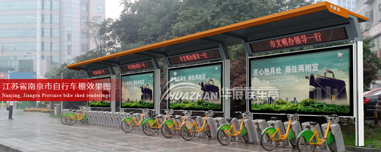

南京城北携手华展：开建百个公共自行车借还点
2016-10-22
南京公共自行车首次跨过秦淮河进入核心区，与宿迁华展候车亭合作的公共自行车棚色彩艳丽、质量过硬、绿色环保。目前汉中门桥至新街口段沿线的6个公共自行车点基本施工完毕南京公共自行车首次跨过秦淮河进入核心区，与宿迁华展候车亭合作的公共自行车棚色彩艳丽、质量过硬、绿色环保。目前汉中门桥至新街口段沿线的6个公共自行车点基本施工完毕南京公共自行车首次跨过秦淮河进入核心区，与宿迁华展候车亭合作的公共自行车棚色彩艳丽、质量过硬、绿色环保。目前汉中门桥至新街口段沿线的6个公共自行车点基本施工完毕南京公共自行车首次跨过秦淮河进入核心区，与宿迁华展候车亭合作的公共自行车棚色彩艳丽、质量过硬、绿色环保。目前汉中门桥至新街口段沿线的6个公共自行车点基本施工完毕